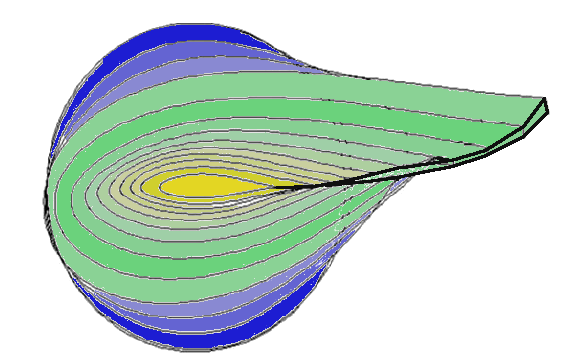

Les pales des éoliennes sont caractérisées par leur profil.


La section varie le long de l'axe longitudinal de la pale, comme le montre la figure suivante, et est justifiée dans Pourquoi la section de la pale n'est pas uniforme?

La section qui se connecte avec le moyeu est circulaire. La figure suivante montre la vue depuis le bout de la pale.
